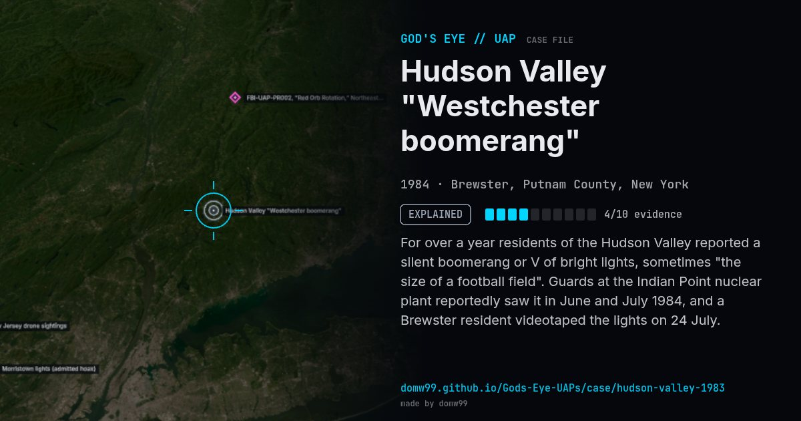

Hudson Valley "Westchester boomerang"
EXPLAINED

For over a year residents of the Hudson Valley reported a silent boomerang or V of bright lights, sometimes "the size of a football field". Guards at the Indian Point nuclear plant reportedly saw it in June and July 1984, and a Brewster resident videotaped the lights on 24 July.
Explanation
State police and the New York Power Authority attributed the sightings to pilots flying Cessna 152s in tight formation from Stormville Airport with coloured lights — a hoax the pilots reportedly enjoyed.
What was seen
Shape: V / boomerang of coloured lights
Witnesses: Thousands across Westchester, Putnam, Dutchess and Fairfield counties
Duration: Recurring, 1983–1984
Browse
- United States
- 1980s
- Explained
- Mass sightings
- Many independent witnesses
- Police witnesses
- Video footage
- Lights and fireballs
- Triangles and V shapes